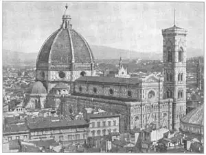

78
DOME TROUBLE
麻烦的圆顶

ONCE upon a time a cathedral was being built in Florence, in Italy. The cathedral was almost finished except for a huge dome on top. Then one day the workmen had to stop work and leave the cathedral unfinished. The architect had died and, as he was the only person who knew how to build a dome big enough for this cathedral, the cathedral remained unfinished for a long time. The architect had left no drawings or plans to guide the builders. He had told no one how he thought the dome should be built. So for over a hundred years the cathedral at Florence stood there with a big hole in the crossing where the dome ought to have been. Finally it was decided to hold a competition and see if any one could be found who could build the dome and thus finish the cathedral.
In the competition many plans were suggested. One man said he was sure he could build the dome, but he would have to have a big column underneath the center to hold it up. Another man said he could build it, but he would have to have the help of a big pile of earth.
“If,” said this one, “we mix gold coins with the earth and put this earth in a huge pile where the dome is to be, then we can build the dome around the pile. When the dome is completed, invite the people to carry off the earth to look for the coins. When all the earth is carried away, there will stand our dome.”
It would have been like looking for the thimble and the ring in a birthday cake.
The man who won the competition and got the job was named Brunelleschi. He had studied the old Roman buildings in Rome. He had worked as a sculptor, and he was a very good architect. Brunelleschi said he could build the dome, and build it, moreover, without the wooden centering that would use up such a lot of timber. But in spite of Brunelleschi’s confidence, the men in charge didn’t feel quite so sure he could do what he said he could. So they made the sculptor Ghiberti (Gee-bear’tee) an architect for the dome, too.
Now, Ghiberti was a fine sculptor (his Gates of Paradise prove that) but he really hadn’t an idea of how to build the dome. He therefore did no work on it, although he was getting as much pay for the job as Brunelleschi, who did all the planning. Of course this didn’t please Brunelleschi at all. So Brunelleschi made believe he was sick and stayed home in bed. Then the workmen had to stop work, for Ghiberti didn’t know what to tell them to do next. So as long as Brunelleschi stayed in bed the work waited.
But in spite of this Ghiberti was not taken from the job, so Brunelleschi had to try another way of getting rid of him. He told the men in charge that he thought it best to divide the work between the two architects.
“There are two difficult things to be done,” said Brunelleschi, “the bridges upon which the masons must stand and the chain which is to bind together the eight sides of the dome. Let Ghiberti take one of them, and I will take the other, that no more time be lost.”
This did the trick. Ghiberti chose the chain, but couldn’t make it work. He was soon taken off the job, and Brunelleschi could go ahead alone.
Brunelleschi finished the dome successfully. It is a different kind of dome from the dome of the Roman Pantheon, and it is different from the dome of St. Sophia. The dome is of brick and it has ribs of stone running down from the top. These ribs divide the dome into eight parts or sides, so it isn’t smoothly round like most domes. For another thing, this dome has a little cupola or tiny tower on top known as a lantern, although there is no light burning inside.
Just how Brunelleschi managed to build the dome without using centering is a mystery. But he did build it—and built it well. To-day it still rises above the roofs of Florence to be seen from far and near, one of the great domes of the world. It gives to the cathedral its name, the Duomo. If you go to Florence you will see near the Duomo a statue of Brunelleschi. He is shown seated, looking up at the dome, with plans on his lap.

No.78-1 DUOM AND BELL TOWER FLORENCE（佛罗伦萨圆顶大教堂和钟塔）
There is still another reason beside his work on the Duomo, for telling you about Brunelleschi. He was the first architect of a new kind of architecture known as Renaissance.
The Renaissance was a rebirth of interest in life—in writing, painting, sculpture, and architecture. It was especially a rebirth of interest in everything left by the ancient Greeks and Romans. I have told you that Brunelleschi studied the old Roman ruins. He had measured them, drawn pictures of them, and learned all he could about them. So when Brunelleschi designed buildings, he used the kinds of columns and decorations and vaults and plans that he admired from studying the Roman ruins. I don’t mean he built copies of Roman buildings. He just used them to go by. And so did all the Italian architects after Brunelleschi.
The Italians didn’t care for Gothic architecture much, anyway. There was too much sunlight in Italy for churches with walls of glass. The Italians liked their buildings dark and cool inside, instead of full of sunlight, even if the sunlight did come through the marvelous stained glass windows of a Gothic cathedral.
This new Renaissance architecture was good in many ways, but in some ways it was not so good. The Gothic buildings had always been built so that every part of the building had its own special job to do. The buttresses were to push against the walls. The decorations carved on top of the buttresses were to give them more weight so they could hold more solidly. The stained glass windows and the statues were to tell the Bible stories to people who couldn’t read. There was scarcely any part of a Gothic building that was not honest or useful.
But the Renaissance buildings weren’t always so honest. Often they were designed just to look well. Columns and pilasters were put on for decoration, without really helping to hold up anything as columns should. An ornament should look like an ornament, not like a column which should be a hard-working, load-bearing support.
Sometimes a Renaissance architect would cover a Gothic building with Renaissance ornament, to make it look like a Renaissance building.
But many of the Renaissance buildings were honest buildings. The best artists of the time became architects and designed buildings. New Gothic cathedrals ceased to be built. Indeed, there were almost enough churches already, and so most of the Renaissance buildings were palaces or government buildings or libraries.
【中文阅读】
很久以前，意大利的佛罗伦萨正在建造一座大教堂。再加一个大圆顶，大教堂差不多就算完工了。突然有一天，工匠们不得不停工，离开尚未竣工的大教堂。因为建 筑师死了。只有他知道大教堂如何建造圆顶，要建多大才够。大教堂就这样停建了很长时间。因为他没有留下任何平面图或草图供工匠们参考，也没对别人讲过圆顶应该如何建造的想法。交叉口缺了圆顶，却露出个大窟窿的佛罗伦萨大教堂，就这么屹立了一百多年之后，终于决定要让大教堂封顶。最后人们决定举行一场竞赛，看看能否找到什么人能给大教堂加盖圆顶，来使大教堂完工。
这场竞赛提出了许多设想和方案。有个人说他保证能建好圆顶，但他需要在教堂底部的中央做一根大柱子来支撑圆顶。另外一个人说他可以建造圆顶，但他要事先垒一个大土堆作辅助。
这个人说：“如果把金币搅拌在土中，堆成一个大土堆，我们就可以围绕土堆建一个圆顶。圆顶建好后，再邀人来扣土找金币，把土运出去。当人们把土都弄走后，我们的圆顶也就自然建成了。”
这简直就像在生日蛋糕上寻找幸运嵌环和幸运戒指一样。
最终赢得这场比赛并承担这项任务的是布鲁内莱斯基。他把罗马所有的古建筑作了一番研究。他是一个雕刻家，也是一位优秀的建筑师。布鲁内莱斯基说他能建造圆顶，既不要定中心，也不需要很多木材。尽管他有这样的自信，但主管们却不太相信他能说到做到。所以他们让雕刻家吉贝尔蒂也参与圆顶的建造。
吉尔贝蒂是一位优秀的雕刻家（他的“天国之门”足以证明），可他对如何建造圆顶一无所知。所以他什么也干不了，但他却和圆顶全盘设计者布鲁内莱斯基，拿一样的报酬。这当然使布鲁内莱斯基不高兴，所以他就在家卧床装病。于是工匠们不得不停工，因为吉尔贝蒂根本就不知道如何指导工匠们下一步该干什么。所以布鲁内莱斯基在家卧床多久，工程也就等了多久。
但是这种办法却没能将吉尔贝蒂赶出这项工程，布鲁内莱斯基只得重新想办法除掉他。他建议工程主管最好将工程一分为二，他和吉尔贝蒂各人负责一半。
“有两件困难的事必须要做好，”布鲁内莱斯基说，“一件是必须为泥匠瓦工搭好可以站的架子，还有一件就是把圆顶八面都固定起来的链子做好。让吉尔贝蒂选一项，我来做另一项，这样就不会浪费时间了。”
这一招果然奏效。吉尔贝蒂选择了做链子，但却没能做成。他很快就被解雇了，而布鲁内莱斯基单打独斗也能继续。
布鲁内莱斯基成功地建造了圆顶。它与罗马万神殿的圆顶完全不同，和圣索菲亚大教堂的圆顶也不一样。这座圆顶用砖砌成，而且从上到下建有许多石肋拱。这些肋拱将圆顶一分为八（面），所以就不像大多数圆顶那样光滑。另外呢，这个圆顶上方还有一个小顶篷，或者说是小塔，作为灯塔，尽管里面并没有灯。
布鲁内莱斯基是如何在没有定中心的情况下建造了圆顶至今还是个谜。但他就是这么建的，而且造得很好。至今它仍然远远高出佛罗伦萨的楼房屋顶，远近可见，它是世界上最著名的圆顶建筑之一。因此这座大教堂就叫做圆顶大教堂。如果你去佛罗伦萨，就会在圆顶大教堂旁边看到布鲁内莱斯基雕像。他坐在那儿，抬头看着圆顶，腿上放着设计图纸。
除了圆顶工程的设计建造，我还有一个理由要再向你介绍布鲁内莱斯基。原来他还是新型建筑风格——文艺复兴式的首位建筑师。
文艺复兴是人们重新对生活产生兴趣——包括文学、绘画、雕刻和建筑，特别是对古希腊和古罗马所遗留下来的文化进行了一次全面的复兴。我曾说过，布鲁内莱斯基研究过古罗马的建筑遗迹。他曾经对这些遗迹做过测量，绘制草图，研习他所能学到的一切东西。所以当布鲁内莱斯基做建筑设计时，他就会从罗马遗迹中借用各种他所欣赏并研究过的柱子、装饰、拱顶以及图纸。我并不是说他在照搬古罗马的建筑。他只是借用这些并使自己的设计有所依据。布鲁内莱斯基之后的许多意大利建筑师也竞相效仿。
然而意大利建筑师并不是太关心哥特式建筑风格。意大利的日照充足，没必要使教堂的墙壁都用玻璃来做，因为他们喜欢室内阴暗一点，凉快一点，而不是充满阳光，即使阳光是从哥特式大教堂那美丽的彩色玻璃中照进来。
虽然这种新型的文艺复兴式建筑风格有许多优势，但在某些方面也暴露出它的不足。所以哥特式建筑就一直在建，而哥特式建筑的每一个部位也有它特定的功能。如扶壁用于支撑墙壁，而扶壁上方雕刻的花样是用来增加扶壁的重量，使其更加牢固。彩色玻璃窗和雕像则用来帮助不识字的人了解《圣经》故事。总之，哥特式建筑几乎没有哪个部分是凭空捏造的，或是毫无用途的。
但文艺复兴式建筑却并不总是这么实打实的。它们有时候仅仅是为了好看而已。柱子和壁柱除了美观外，不能真正像柱子所应该起的支撑作用。而装饰看起来就应该是装饰，不该像柱子，因为建造柱子需要多花精力，而柱子更应该用于承重才对。
文艺复兴风格的建筑师们有时会在哥特式建筑物上覆盖一些文艺复兴式建筑的装饰，让它们具有一些文艺复兴式建筑风格的特点。
但大部分文艺复兴式的建筑物都是被一丝不苟完成的。当时最优秀的艺术家都成为了建筑师，并积极参与建筑设计。人们不再建造任何新的哥特式大教堂了，因为教堂已经够多了。所以大部分文艺复兴式的建筑物是宫殿、政府大楼和图书馆等。